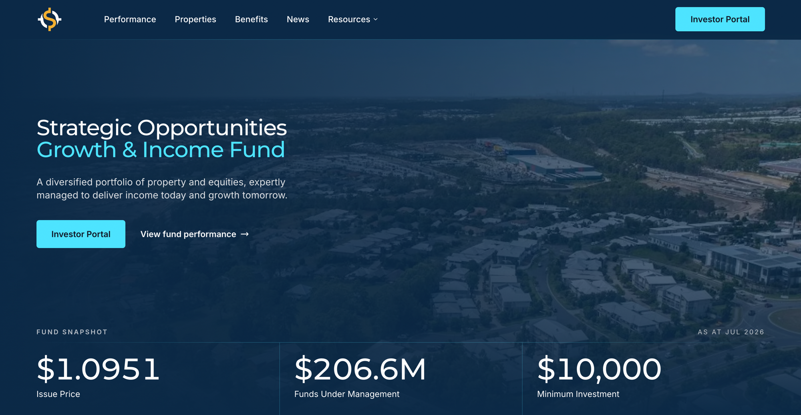
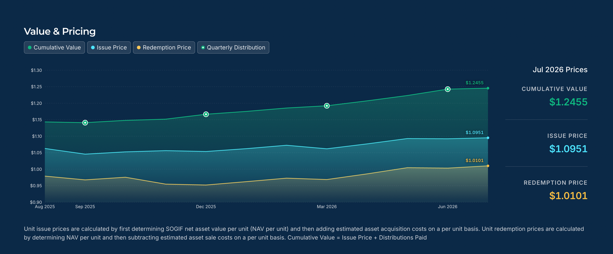
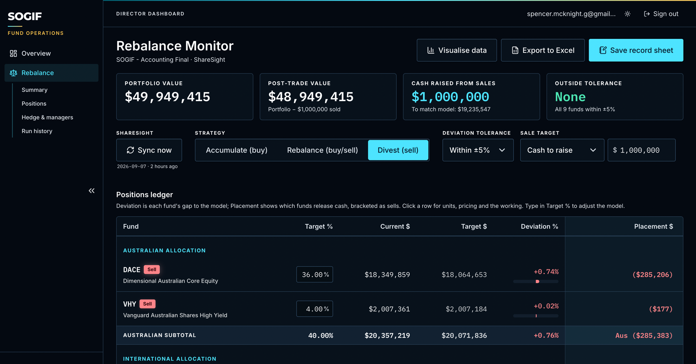

Case study · sogif.au · Forward-deployed engineering, before the title
One engineer, embedded in a $206M fund.
SOGIF is a regulated Australian property and equities fund. When I started it ran on an ageing WordPress site, spreadsheet workflows and portfolio data locked inside a fragile third-party API. I rebuilt it as one platform, working directly with the fund's directors. The public site shipped in under two months, then it grew: an operations dashboard, an automated data pipeline, and a product the fund presented at its own investor seminar.
Funds under management
$100M → $206.6M
growth during the engagement, served end to end by the platform
Engagement duration
+90%
after the public rebuild
Google PageSpeed
4 × 100
performance, accessibility, best practices, SEO
Automated tests
188
60 on the rebalance engine alone

sogif.au, live. The fund snapshot pulls real portfolio data through a Supabase read model — public traffic never touches the upstream Sharesight API.
Everything in one place
Prospective investors see performance, properties and compliance disclosures. Existing investors get distributions, reports and their portal. Staff publish valuations, news and PDS material through DatoCMS without a deploy. A month-end pipeline syncs Sharesight into Supabase with distributed OAuth locking and an audit trail for every run.

Live performance visualisation, drawn from the same governed read model.
The proof · from workflow to software
The director's spreadsheet, made software.
Every month a director rebalanced the portfolio by hand across a five-sheet spreadsheet. I sat with that workflow, learned the financial rules underneath it, and rebuilt it as a secure dashboard: a 1,400-line TypeScript engine that reproduces the spreadsheet's water-filling allocation across buy-only, buy-and-sell and sell-only strategies. Every run is tolerance-checked, recorded and exported to Excel, straight back into the fund's operating process. A monthly chore became minutes of review — the director's time freed for actual decisions.
Jul 23
Dashboard shipped to the director, in production.
Jul 24
Calculation and usability refinements, next day.
Jul 27
Director feedback live: workflow changes and Excel export, four days after first contact.

Rebalance Monitor. Live Sharesight positions against the target model, deviation and tolerance checks, proposed placements, saved record sheets.
Built with AI, engineered on purpose
A one-person build because the AI tooling was treated as infrastructure. Claude Code and Cursor daily, a custom MCP server wired into the CMS, agents on schema migration, API investigation and test scaffolding. The leverage came from direction: clear architecture, defined security boundaries, and a test suite the tooling had to pass. One engineer covering UX, financial modelling, auth, database design and infrastructure.
Under the hood
Next.js 16, React 19, TypeScript, deployed on Vercel Sydney
Supabase with row-level security and magic-link director auth
Feature-flagged fund status, Turnstile-protected submissions
Also in production
A vendor portal for Hancock Iron Ore, delivered with DyFlex on SAP: a React frontend over complex SAP authentication and APIs, from pixel-accurate prototype in four days to a tested, production application.